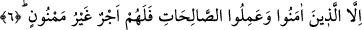

Vaktiyle ağzımda iki sıra inci vardı
Dişlerim gümüş tuğladan yapılmış duvar gibiydi.
Şimdi dikkat et konuştuğum vakit
Eski kale duvarı gibi döküldüğünü görürsün
Benim de siyah renkli kıvırcık saçlarım vardı
Giydiğim elbise vücudumun nazikliğinden utanırdı.
Ama şimdi yaşlandım, saçım sakalım ağardı iki büklüm oldum
Benim vücuduma artık bir kefen lazımdır.
Aynu’l-maânî’de bu âyetle ilgili olarak şu açıklamaları görüyoruz: Yukarda “sâfilîn”
kelimesinin başına cins ifâde eden “el” takısı gelmemiştir. Oysa Abdullah b. Mes’ûd’un
mushafında bu vardır, ancak bu mushaflarda “el” takısının getirilmemiş olması “safilîn”
kelimesiyle bütün herkesin değil sâdece yaşlanmaktan dolayı aklında zâfiyet meydana
gelen kimselerin kasdedilmiş olmasından dolayıdır.
Keşfu’l-esrar’da ifâde olunduğuna göre; “Safilîn” kelimesinden maksad hasta,
kötürüm, çocuk gibi zâfiyet içinde olan kimselerdir. Yaşı alabildiğine ilerlemiş ve
köhnemiş kimseler ise bütün bu sayılanların içinde en aşağı tabakada olanlardır.
Dolayısıyla “esfel” kelimesi ile onlar kasdedilmiş olur.
6. Fakat îman edip sâlih amel işleyenler için eksilmeyen devamlı bir ecir vardır.
“Fakat” sadık bir îmanla “îman edip” karşılığında ecir vaad edilmiş “sâlih amel
işleyenler için” itâatlerine; yaşlılık; yâni kocayıp köhnemekle imtihan edilmelerine, her
türlü meşakkate göğüs germelerine ve zayıf oldukları halde ibâdet etmelerine karşılık
“eksilmeyen devamlı bir ecir vardır.”
Âyette yer alan yapılan istisna birinci mânâya göre muttasıl istisnâdır. Çünkü önce
geçen “sonra indirdik” âyetiyle, “îman edip sâlih amel işleyenler” aynı kategoridedir.
İkinci mânâya göre ise bu istisna munkatı’ istisnâdır. Manası: “Lakin, fakat” demektir.
Buna göre âyetin mânâsı; fakat bu yaşlanmış ve köhnemiş kimselerden îman edip sâlih
amel işleyenler için eksilmeyen, devamlı bir ecir vardır, demek olur.
Ebu’l-Leys Semerkandi şöyle diyor: “İllelleziyne” âyetinin mânâsı; Âlim olan ve
ilmiyle amel eden kimsenin aklı zayıflamaz ve başından gitmez demektir. Nitekim bir
hadiste bu mânâyı destekleyen şöyle bir ifâde yer alıyor: “Ömrü uzun olup ameli güzel
olan kimseye ne mutlu” [155]
İbn Abbas (r.a.) şöyle der: “Kur’an okuyan kimse erzel-i ömre döndürülmez.”
İşte bu îman edip, sâlih amel işleyenlere keramet yurdunda bitip tükenmeyen bir ecir
vardır. Çünkü ecrin yeri orasıdır. Âyette yer alan “fe lehum ecrun” ifâdesinin baş